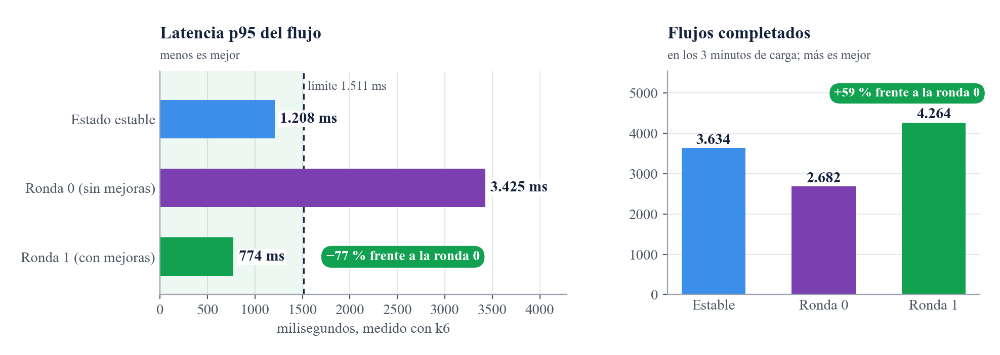
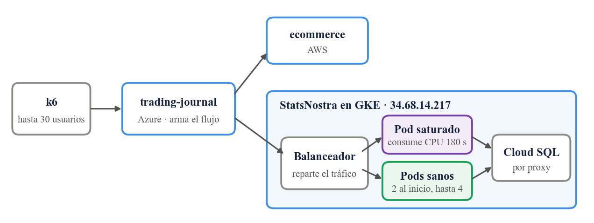
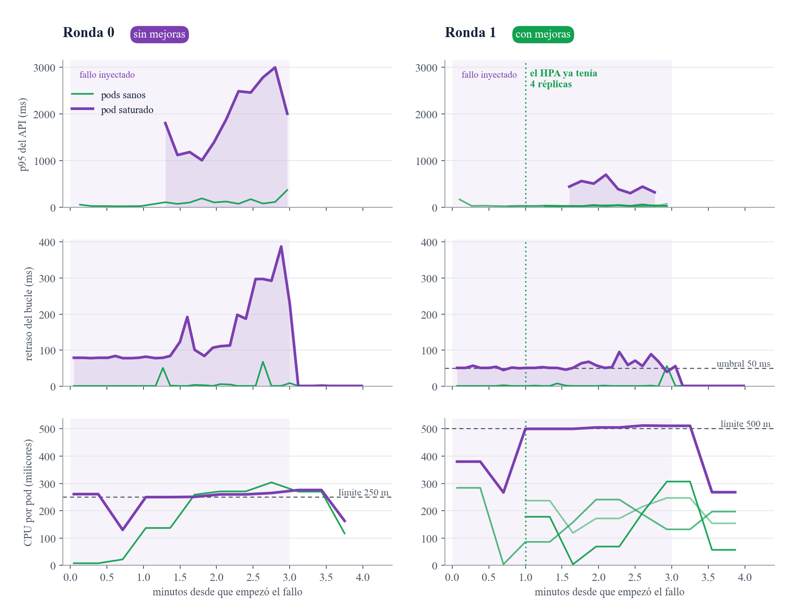
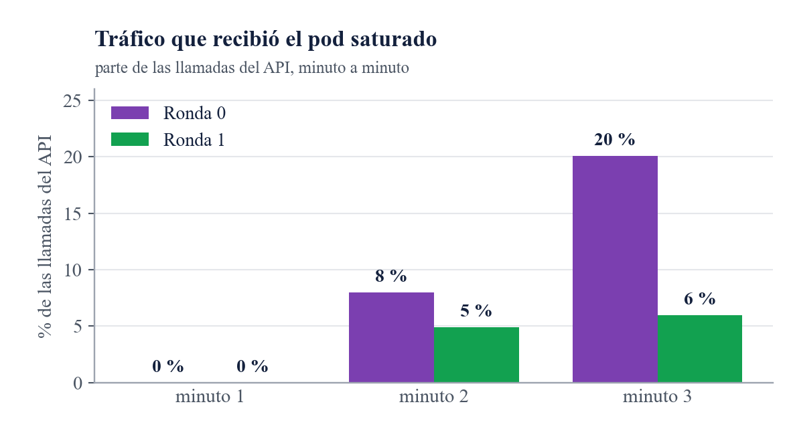

Experimento de ingeniería del caos en GKE · 14 de noviembre de 2026
| Ronda 0, sin mejoras 3.425 ms p95 del flujo. Límite aceptado: 1.511 ms. No se cumple. |
Ronda 1, con mejoras 774 ms p95 del flujo. Se cumple, 77 % menos que en la ronda 0. |
Errores en las dos rondas 0 El servicio contestó siempre; lo que falló fue la rapidez. |
Saturamos durante 3 minutos la CPU de uno de los pods de StatsNostra mientras k6 mandaba carga por el flujo completo: trading-journal en Azure, ecommerce en AWS y StatsNostra en GKE. Queríamos ver si el servicio aguanta que un pod se degrade. Sin cambios no aguantó. Con tres ajustes de configuración, sin tocar el código, sí.


El perfil de carga es el mismo en todas las pruebas: 5 usuarios durante 60 s, luego 15 y luego 30, sobre el flujo GET /api/v2/trades/5540 de trading-journal, que llama a StatsNostra y a ecommerce. Antes de inyectar nada lo corrimos tres veces con el sistema sano.
| Corrida | Flujos | Éxito | p50 | p95 | p99 |
|---|---|---|---|---|---|
| 1 | 3.693 | 100 % | 418 ms | 1.208 ms | 1.714 ms |
| 2 | 3.634 | 100 % | 450 ms | 1.200 ms | 1.594 ms |
| 3 | 3.324 | 100 % | 450 ms | 1.479 ms | 1.934 ms |
| Mediana | 20,1 p/s | 100 % | 450 ms | 1.208 ms | 1.714 ms |
Con la mediana fijamos el límite en p95 ≤ 1.511 ms, que es el p95 más un 25 %. Ya en estado estable cada pod llegó a 310 m de CPU, por encima de su límite de 250 m, así que partíamos sin holgura.
Hipótesis. Si la CPU de un pod de StatsNostra llega al 100 % durante 3 minutos, el flujo mantiene una tasa de éxito de al menos 99 % y un p95 de a lo sumo 1.511 ms.
| Falla | Un hilo del pod consume CPU durante 180 s (POST /fault/cpu). Solo funciona con el interruptor de fallos encendido y la cabecera X-Inject-Fault: cpu. |
|---|---|
| Qué se mide | p95 y éxito del flujo con k6; además el retraso del bucle de eventos y la CPU de cada pod, y los logs por trace id. |
| Alcance | Un solo pod de StatsNostra; el otro no se toca. Tráfico sintético. |
| Se aborta si | El éxito baja de 50 %, el p95 pasa de 15 s durante 30 s, o no se puede detener el consumo. |
| Reversión | DELETE /fault/cpu en cada pod y apagar el interruptor. Corre siempre al final y se probó antes de la primera ronda. El consumo además se corta solo a los 180 s. |
El experimento está escrito como código (caos/experimentos/03-agotamiento.json, Chaos Toolkit): una ejecución es una ronda completa. Como reiniciar pods o mandar carga estorba a las mediciones de las otras APIs, cada ronda se hizo en una ventana acordada y las acciones se niegan a correr si llegaron peticiones en los últimos 45 s.
El pod saturado no devolvió errores, contestó tarde. Por eso el éxito siguió en 100 % y la sonda de readiness, que solo comprobaba que el proceso respondiera, nunca lo sacó del balanceo.
Lo que atendió ese pod fue lento: p50 de 1.490 ms y p95 de 2.615 ms, contra un p95 de 110 ms del pod sano. Su retraso del bucle de eventos pasó de 1 ms a una mediana de 79 ms (máximo 387 ms) y su CPU se quedó en el límite de 250 m. La mediana del flujo apenas se movió (400 ms) porque la mitad de las peticiones seguía cayendo en el pod sano; el p95 sube por las que cayeron en el otro.
Las dos rondas, lado a lado (la zona morada es la ventana de 3 minutos con la CPU saturada):

El trace id k6-1-134 muestra la diferencia con una misma petición lógica (k6 genera el id con el usuario y la iteración, así que se repite en las dos rondas):
| Llamada a StatsNostra | Ronda 0 | Ronda 1 |
|---|---|---|
| partidos | 2.399 ms (pod saturado) | 19 ms (pod sano) |
| predicciones | 3.704 ms (pod saturado) | 18 ms (pod sano) |
| Cambio | Valor | Por qué |
|---|---|---|
| Readiness por saturación | El pod sale del balanceo si su retraso del bucle pasa de 50 ms. Se revisa cada 5 s y sale tras 2 fallos (antes, 30 s). | En la ronda 0 el pod saturado superó 50 ms en 27 de 36 muestras y el sano en 2 de 36. |
| CPU del pod | Request 200 m y límite 500 m (antes 100 m y 250 m). | Con 250 m los pods ya estaban al límite sin ninguna falla. |
| HPA | Autoescalado por CPU al 60 %, entre 2 y 4 réplicas. | Más capacidad cuando un pod rinde menos, en vez de cargar a los demás. |
Las tres son solo configuración: el código de la API es el mismo en las dos rondas. El umbral de 50 ms sale de los datos de la ronda 0.
Mismo perfil, mismo fallo, misma duración, y el pod elegido otra vez el primero de los pods vivos.
| Métrica | Estado estable | Ronda 0 | Ronda 1 | Ronda 1 frente a ronda 0 |
|---|---|---|---|---|
| Éxito | 100 % | 100 % | 100 % | igual |
| p50 | 450 ms | 400 ms | 405 ms | +1,2 % |
| p95 | 1.208 ms | 3.425 ms | 774 ms | −77,4 % |
| p99 | 1.714 ms | 4.596 ms | 1.082 ms | −76,5 % |
| Máximo | sin medir | 5.945 ms | 1.571 ms | −73,6 % |
| Flujos completados | 3.634 | 2.682 | 4.264 | +59,0 % |
El pod saturado siguió consumiendo CPU toda la ventana (se quedó en su límite de 500 m, con picos medidos de 512 m; en la ronda 0 fue el límite de 250 m, con picos de 276 m). Lo que cambió es cuánto tráfico le llegó: 5 % de las llamadas en la ronda 1 contra 14 % en la 0. Sus respuestas siguieron siendo más lentas que las de los demás (p95 de 569 ms contra 28 a 43 ms), pero ya no mandaban sobre la cola. A los 60 s de empezar la carga el HPA ya había subido el servicio a 4 réplicas.

Conclusión. La hipótesis se refuta en la ronda 0 y se cumple en la ronda 1. Con una sola ejecución por ronda y las tres mejoras juntas no podemos decir cuánto aportó cada una, y la ronda 1 además tiene más CPU por pod que la 0. El p95 de k6 incluye la red y las otras dos nubes.
Un pod lento no da errores. El éxito y la disponibilidad no lo ven; hay que mirar latencia o saturación.
El primer minuto el pod saturado casi no recibió llamadas en ninguna de las dos rondas (0 % y 0 %) y su parte creció al subir los usuarios. No lo verificamos; sospechamos que el coordinador reutiliza conexiones y el balanceador reparte por conexión y no por petición.
El HPA cambia lo que se puede comparar: el nodo extra tardó unos minutos en aparecer y la comprobación del experimento, que exigía exactamente 2 réplicas, marcó la ronda 1 como desviada hasta que la cambiamos a entre 2 y 4.
La ronda 0 se repitió cuatro veces por fallos nuestros en las herramientas: una guarda que se contaba a sí misma, un pod en terminación elegido como objetivo (sin confirmar que el consumo había empezado, el resultado parecía válido y no lo era) y un journal que se cortaba por codificación. Quedaron corregidos en el código.
Riesgo que sigue abierto: si todos los pods se saturaran a la vez, la readiness por saturación dejaría el balanceador sin destinos y la caída sería total.
| Prioridad | Qué hacer |
|---|---|
| Alta | Límite de concurrencia por pod que responda 503 rápido en lugar de encolar, y tiempos de espera y circuito abierto en las llamadas de trading-journal. |
| Alta | Alerta sobre el retraso del bucle y el p95 por pod: hoy esta falla solo se ve mirando el tablero. |
| Media | HPA por latencia o peticiones por segundo además de CPU, y nodos de reserva para no esperar a uno nuevo. |
| Media | PodDisruptionBudget, clúster regional (hoy es de una sola zona) y varias repeticiones por ronda para tener un intervalo del p95. |
| Baja | Enviar las métricas de la API a Grafana Cloud con su service.name y usar este experimento como puerta del pipeline. |
Cómo reproducir todo, las gráficas y los datos: caos/README.md y caos/tablero/README.md.